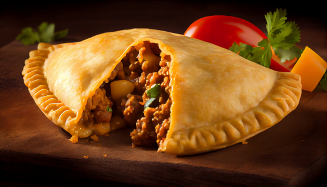
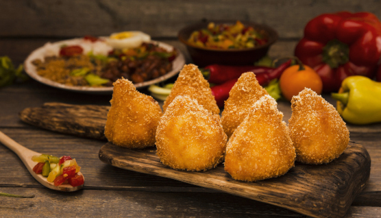
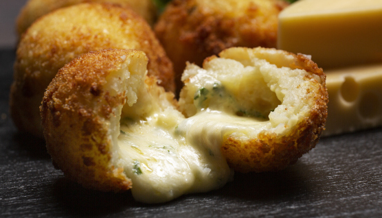

Pasteis feitos na hora!
Pasteis caseiros, feitos com ingredientes frescos e de qualidade. Aqui você encontra os sabores mais tradicionais e também opções inovadoras. Venha experimentar nossas delícias!

Temos coxinhas fritas
Coxinhas caseiras, feitas com frango desfiado, temperos frescos e catupiry. Crocantes por fora e cremosas por dentro, nossas coxinhas são o melhor lanche da cidade.

Bolinhas de queijo de dar água na boca
Bolinhas de queijo caseiras, feitas com queijo mussarela, ovos, farinha de trigo e temperos frescos. Crocantes por fora, macias por dentro e cheias de sabor, nossas bolinhas de queijo são perfeitas para um lanche rápido e delicioso.